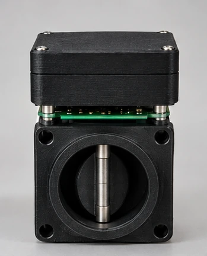
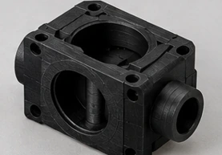
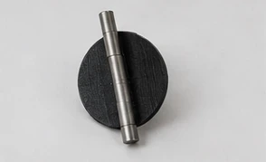
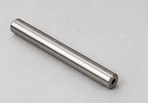
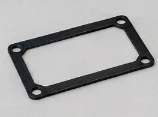
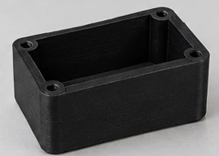
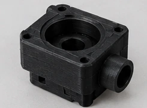
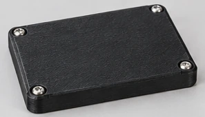
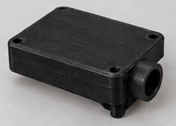

Sapia
Válvula borboleta de 10 mm, com quatro aplicações.
Projeção de IA

As imagens são uma projeção feita por inteligência artificial, não fotos reais.
Peças
Cada peça do modelo, em imagens de projeção feitas por inteligência artificial.

Corpo da válvula
Canal Ø10, câmara Ø32 e fixação 4× M4.

Disco borboleta
Disco de Ø32 × 3 mm com furo para o eixo.

Eixo
Leva o ímã lido pelo sensor AS5600.

Vedação
Junta entre a caixa e a tampa.

Caixa eletrônica
Três passagens Ø7 para os cabos.

Caixa do atuador

Tampa da caixa eletrônica
Fecha a caixa, com 4 furos de fixação.

Tampa superior do atuador
Protótipos
O mesmo modelo, uma aba para cada aplicação.
Vazamento de água
Compara a vazão de entrada e a de saída. Se a diferença persiste, dispara um pré-alarme de 60 s e fecha a válvula, com rearme seguro.
Damper de CO₂
Renovação proporcional do ar a partir da leitura NDIR de CO₂, com cálculo de VPD e fail-safe biológico se o sensor falhar.
Corte de gás
Corte com decisão imediata por presença (PIR) ou botão de emergência. A reabertura é negada enquanto houver presença.
Purga solar
Drena a tubulação em pulsos antes do congelamento, só na janela noturna, com sensor DS18B20 no ponto mais frio.
Vazamento de água
Compara a vazão de entrada e a de saída. Se a diferença persiste, dispara um pré-alarme de 60 s e fecha a válvula, com rearme seguro.
- Pré-alarme
- 60 s
- Rearme
- 3 s
- Sensor YF-S201
- 450 p/L
Como funciona
Uma válvula que percebe o vazamento e se fecha sozinha.
O problema
Um vazamento escondido desperdiça água e pode estragar paredes e pisos antes de alguém perceber.
Como o Sapia decide
Dois sensores de vazão YF-S201 medem quanto entra e quanto sai da tubulação. Se a entrada passa da saída por mais que o limiar de tolerância durante 2 s, o vazamento é confirmado.
O que a válvula faz
Primeiro liga um pré-alarme de 60 s, com LED piscando e buzzer. Se a diferença sumir, cancela. Se continuar, a válvula fecha e trava, e o bloqueio fica gravado na EEPROM, então sobrevive a uma queda de energia. Para rearmar, é preciso segurar o botão por 3 s, só depois que o vazamento acabou.
O que testar aqui
Aperte Simular vazamento e acompanhe a contagem. Use a velocidade 10× para não esperar 60 s. Tente rearmar com o vazamento ativo (será negado) e depois de consertar.
Simulador
Compara duas vazões e fecha a válvula se a diferença persistir. Mude os sensores e simule um vazamento.
Vazamento confirmado por 2 s de diferença acima do limiar inicia o pré-alarme (LED e buzzer). Se cessar, a contagem é cancelada. Se persistir, a válvula fecha e trava, com o estado gravado na EEPROM. O rearme exige segurar o botão por 3 s e só vale após o fim do vazamento.
Modelo explodido
Ao confirmar o vazamento, o disco fecha a 0° e o encoder confirma a posição. Arraste “Explodir” para ver cada peça.
Damper de CO₂
Renovação proporcional do ar a partir da leitura NDIR de CO₂, com cálculo de VPD e fail-safe biológico se o sensor falhar.
- Passo
- 15°
- Faixa
- 600–1200 ppm
- Falha do sensor
- 45° em 10 s
Como funciona
Uma válvula que abre aos poucos conforme o CO₂ sobe.
O problema
O ar de uma estufa ou terrário precisa ser renovado conforme o CO₂ sobe, e de forma proporcional, não apenas ligado ou desligado.
Como o Sapia decide
Um sensor NDIR mede o CO₂. Entre 600 e 1200 ppm, a abertura cresce em degraus de 15°, com histerese de 50 ppm para a válvula não ficar oscilando.
O que a válvula faz
Funciona como um damper, de 0° a 90°. Acima de 1200 ppm liga também o exaustor de 12 V. Se o sensor falhar por 10 s, o damper vai para 45° e o exaustor desliga (fail-safe biológico). O simulador calcula ainda o VPD, a partir da temperatura e da umidade, e diz se está na faixa do perfil escolhido.
O que testar aqui
Arraste o CO₂ e veja os degraus no gráfico. Use as predefinições, troque o perfil e clique em Falha do sensor para ver o fail-safe depois de 10 s.
Simulador
O disco abre em degraus conforme o CO₂ sobe. Mude a concentração, a temperatura e a umidade.
Abertura em degraus de 15° (0° a 90°), proporcional entre 600 e 1200 ppm, com histerese de 50 ppm. Acima do nível crítico liga o exaustor de 12 V. Se o sensor falhar por 10 s, o damper vai para 45° e o exaustor fica desligado (fail-safe biológico). Modelo didático: área livre = 1 − cos θ e 10% de vazão por convecção passiva como hipótese.
Modelo explodido
O disco abre em degraus de 15° conforme o CO₂ sobe. A vista da câmara mostra a abertura em detalhe.
Corte de gás
Corte com decisão imediata por presença (PIR) ou botão de emergência. A reabertura é negada enquanto houver presença.
- Decisão
- 0 s
- Fechamento
- ≈ 2,5 s
- Rearme
- 3 s
Como funciona
Uma válvula que corta na hora e só volta com confirmação.
O problema
Quando o assunto é gás, esperar custa caro: o corte precisa ser imediato e não pode ser desfeito por engano.
Como o Sapia decide
Um sensor de movimento (PIR) ou o botão de emergência dispara o corte. A decisão acontece na mesma iteração do loop(), sem atraso.
O que a válvula faz
Vai a 0° e leva cerca de 2,5 s para fechar por completo, a 36°/s. O bloqueio fica gravado na EEPROM. Enquanto houver presença, reabrir é negado, e o rearme exige segurar o botão por 3 s sem presença. LEDs e buzzer mostram o estado.
O que testar aqui
Use Detectar movimento (pulso de 1,5 s), Presença contínua e Emergência. Tente abrir a válvula durante a presença e depois rearmar. É um protótipo didático, não um dispositivo de segurança certificado.
Simulador
Movimento ou emergência fecham a válvula na hora. Teste o corte, a presença e o rearme.
O corte acontece na mesma iteração do loop(), sem atraso de decisão. Movimento (PIR) ou botão de emergência fecham a válvula a 0°. A reabertura é negada enquanto houver presença, e o bloqueio fica gravado na EEPROM, com rearme por 3 s sem presença. Fechamento mecânico em cerca de 2,5 s a 36°/s.
Aviso de segurança. Um disco de 3 mm em câmara de Ø32 mm não veda gás. Use junta elastomérica, teste de estanqueidade e uma eletroválvula certificada normalmente fechada em série. Escovas de motor DC podem ser fonte de ignição. Sem energia, a válvula permanece na posição atual. Sensores MQ servem só para protótipo, não são certificados.
Modelo explodido
O disco vai a 0° assim que o corte é decidido. Gire o modelo e veja o eixo, a placa e a caixa.
Purga solar
Drena a tubulação em pulsos antes do congelamento, só na janela noturna, com sensor DS18B20 no ponto mais frio.
- Limiar
- < 3 °C
- Janela
- 22h às 6h
- Pulso
- 30 s
Como funciona
Uma válvula que purga a tubulação antes de o gelo se formar.
O problema
Na tubulação externa de um aquecimento solar, a água parada pode congelar de madrugada, e o gelo ocupa cerca de 9% a mais de volume.
Como o Sapia decide
Um sensor DS18B20 à prova d’água fica no ponto mais frio da tubulação, e um relógio RTC DS3231 limita a ação à janela de 22h às 6h. Abaixo de 3 °C, o Sapia decide purgar. O limiar fica acima de 0 °C para dar folga.
O que a válvula faz
Abre a 90° por 30 s e drena a tubulação em pulsos, cerca de 2 L por pulso (valor de hipótese didática), com intervalo mínimo de 30 min entre purgas.
O que testar aqui
Baixe a temperatura com as predefinições, mude a hora do dia, acelere o tempo para 60× e use Purga manual. O gráfico mostra o ângulo dos últimos 120 s.
Simulador
Abaixo do limiar, à noite, a válvula abre em pulsos. Mude a temperatura e a hora do dia.
O DS18B20 impermeável fica no ponto mais frio da tubulação externa. O RTC DS3231 limita a atuação à janela de 22h às 6h. Abaixo de 3 °C a válvula abre a 90° por 30 s, com intervalo mínimo de 30 min entre purgas. O limiar tem folga acima de 0 °C porque o gelo ocupa cerca de 9% a mais de volume. O volume de 4 L/min (≈ 2 L por pulso de 30 s) é hipótese didática.
Modelo explodido
Em cada pulso o disco abre a 90°. A caixa abriga os sensores de temperatura e de hora.